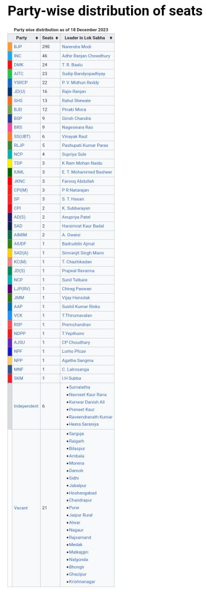

Analysis of 17Th Lok sabha
The 17th Lok Sabha was formed by the members elected in the 2019 Indian general election.
Elections, all across India, were conducted in seven phases from 11 April 2019 to 19 May 2019 by the Election Commission of India.
Counting started officially on the morning of 23 May 2019 and the results were declared on the same day.
Om Birla was elected as the Speaker of the House. As no party holds 10% of the seats to secure the position of Leader of Opposition,
currently, there is no Leader of the Opposition. However, Adhir Ranjan Chowdhury is the leader of the Congress in the Lok Sabha,
which is the second largest party.The 17th Lok Sabha has the most women representatives,at 14 percent.
267 members are first-time MPs. 233 members (43 percent) have had criminal charges against them.
475 members have their declared assets to be more than ₹1 crore (US$130,000); average assets were ₹20.9 crore (US$2.6 million).
Around 39 percent of members are professionally noted to be politicians or involved in social work.
Members
Main article:
List of members of the 17th Lok SabhaSpeaker: Om Birla, BJP
Deputy Speaker: Vacant
Leader of the House: Narendra Modi, BJP
Leader of Opposition: Vacant
Secretary General: Utpal Kumar Singh
